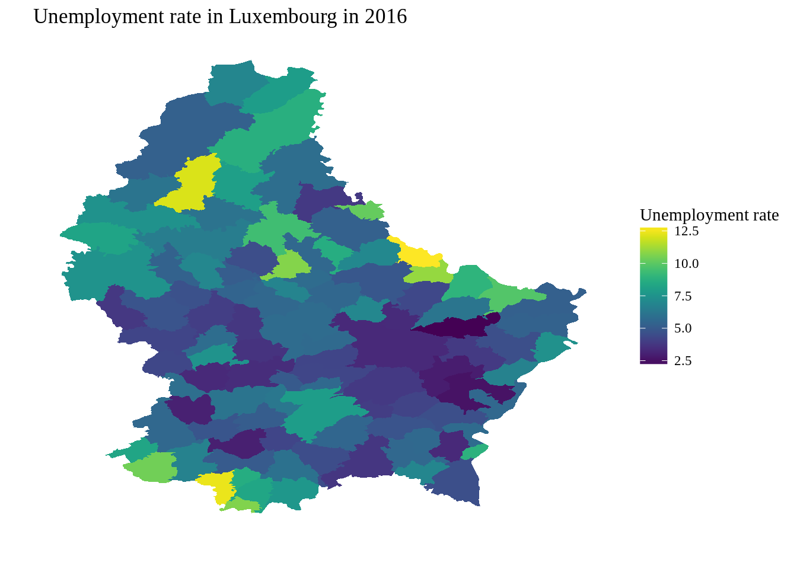
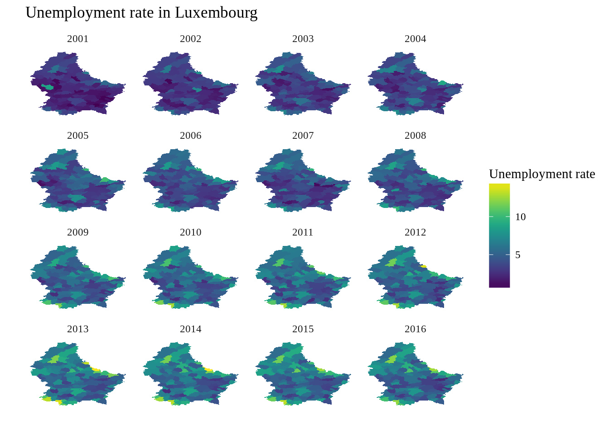

maps
December 27, 2017In this blog post, I show various ways to create maps using R. You’ll need to install a lot of packages and download two data sets; the unemployment rate in Luxembourg as well as a shapefile.
To get the unemployment rate in Luxembourg, you can take a look at our previous blog post or simply run the following lines:
library(rvest)
library(dplyr)
library(purrr)
library(janitor)
library(tidyr)
page_unemp = read_html("http://www.statistiques.public.lu/stat/TableViewer/tableViewHTML.aspx?ReportId=12950&IF_Language=eng&MainTheme=2&FldrName=3&RFPath=91")
data_raw = page_unemp %>%
html_nodes(".b2020-datatable") %>% .[[1]] %>% html_table(fill = TRUE)
colnames(data_raw) = data_raw[1, ]
colnames(data_raw)[1:2] = c("division", "variable")
data_raw = data_raw[-c(1,2), ]
unemp_lux = data_raw %>%
map_df(function(x)(gsub(",", ".", x = x))) %>%
mutate_at(vars(matches("\\d{4}")), as.numeric) %>%
gather(key=year, value, -division, -variable) %>%
spread(variable, value) %>%
clean_names()These lines scrape the data off STATEC’s (the national institute of statistics) public tables and puts the raw data into a tidy data frame. Let’s take a look:
head(unemp_lux)## division year active_population of_which_non_wage_earners
## 1 Beaufort 2001 688 85
## 2 Beaufort 2002 742 85
## 3 Beaufort 2003 773 85
## 4 Beaufort 2004 828 80
## 5 Beaufort 2005 866 96
## 6 Beaufort 2006 893 87
## of_which_wage_earners total_employed_population unemployed
## 1 568 653 35
## 2 631 716 26
## 3 648 733 40
## 4 706 786 42
## 5 719 815 51
## 6 746 833 60
## unemployment_rate_in_percent
## 1 5.09
## 2 3.50
## 3 5.17
## 4 5.07
## 5 5.89
## 6 6.72Once you have the unemployment data, install the next packages you’ll need to follow the rest of the post:
install.packages(
c(
"viridis", # Optional, but better color scheme than the default
"broom", # For tidy()
"ggplot2", # To create a basic map
"ggthemes" # To change the theme of the map
)Then install two further packages:
install.packages('rgeos', type='source') # Dependency of rgdal
install.packages('rgdal', type='source') # To read in the shapefilergdal might be tricky to install on macOS and Linux. If you’re using Ubuntu, you have to install libgdal-dev, and on macOS you’ll need to install gdal using Homebrew.
There’s a final package to install, but you have to get it from Github (and thus need devtools):
devtools::install_github("dgrtwo/gganimate")To draw a map, you will need a so-called shapefile. These files contain the geometry of the countries, regions, etc so that it is possible to plot them. The shapefile for Luxembourg can be obtained from Luxembourg’s Open data Portal.
Download the zip, and look for the file called LIMADM_COMMUNES.shp, which contains the geometry of the Luxembourgish communes. Leave it inside the folder Limadmin_SHP, as it contains other files needed by rgdal::readOGR() to read in the shapefile.
library(broom)
library(dplyr)
library(purrr)
library(ggplot2)
library(viridis)
library(rgdal)
library(ggthemes)
library(gganimate)Now we can read the data, and do some basic cleaning. I comment every step, but run the code line by line to really understand what’s going on!
Read the shapefile:
communes = readOGR("Limadmin_SHP/LIMADM_COMMUNES.shp")## OGR data source with driver: ESRI Shapefile
## Source: "Limadmin_SHP/LIMADM_COMMUNES.shp", layer: "LIMADM_COMMUNES"
## with 105 features
## It has 4 fields## Warning in readOGR("Limadmin_SHP/LIMADM_COMMUNES.shp"): Z-dimension
## discarded“Convert” it to a data frame using broom::tidy(). In the past, this was made with ggplot2::fortify():
communes_df = broom::tidy(communes, region = "COMMUNE")Remove the cantons from the data, as well as the unemployment rate for the whole country. Then only select the relevant columns and rename them in one go:
unemp_lux = unemp_lux %>%
filter(!grepl("Canton", division), division != "Grand Duchy of Luxembourg") %>%
select(commune = division, year, unemp_rate = unemployment_rate_in_percent)The name of two communes are written differently in the shapefile than in the data. We can change that using gsub(). Change “Haute-Sûre” to “Haute Sûre” in the unemployment data:
unemp_lux$commune = gsub("Haute-Sûre", "Haute Sûre", unemp_lux$commune)Change “Redange” to “Redange-sur-Attert” in the data frame containing the geometry of the communes:
communes_df$id = gsub("Redange", "Redange-sur-Attert", communes_df$id)Select relevant columns from the communes data frame, and rename them:
communes_df = communes_df %>%
select(long, lat, commune = id) Finally, join the communes data frame (containing the geometry) with the unemployment data, by communes:
final_data = left_join(communes_df, unemp_lux, by = "commune")Let’s plot the unemployment rate for the latest available year:
final_data2016 = final_data %>%
filter(year == 2016)First, let’s plot a basic map using ggplot2. Even if you’re not familiar with ggplot2 the code below should be very straightforward:
ggplot_map = ggplot() +
geom_polygon(data = final_data2016,
aes(x = long, y = lat, group = commune, fill = unemp_rate)) +
labs(title = "Unemployment rate in Luxembourg in 2016",
y = "", x = "", fill = "Unemployment rate") +
theme_tufte() +
theme(axis.text.x = element_blank(),
axis.ticks.x = element_blank(),
axis.text.y = element_blank(),
axis.ticks.y = element_blank()) +
scale_fill_viridis()Finally, print the map:
print(ggplot_map)
It is also possible to create a map per year using facet_wrap():
facet_map = ggplot() +
geom_polygon(data = final_data,
aes(x = long, y = lat,
group = commune, fill = unemp_rate)) +
labs(title = "Unemployment rate in Luxembourg", y = "", x = "", fill = "Unemployment rate") +
theme_tufte() +
theme(axis.text.x = element_blank(),
axis.ticks.x = element_blank(),
axis.text.y = element_blank(),
axis.ticks.y = element_blank()) +
facet_wrap(~year) +
scale_fill_viridis()
print(facet_map)
We clearly see that unemployment has risen in Luxembourg these past 15 years. This series of maps are great for printing, but since you’re reading this on a screen, why not try to animate these maps? This is possible with gganimate():
library(gganimate)
map_anim = ggplot() +
geom_polygon(data = final_data,
aes(x = long, y = lat, group = group, fill = unemp_rate, frame = year)) +
labs(title = "Unemployment rate in Luxembourg", y = "", x = "", fill = "Unemployment rate") +
theme_tufte() +
theme(axis.text.x = element_blank(),
axis.ticks.x = element_blank(),
axis.text.y = element_blank(),
axis.ticks.y = element_blank()) +
scale_fill_viridis()
gganimate(map_anim, "map_lux.mp4", interval = 2)You can create an .mp4 video as well as a .gif. Just change the extension inside the gganimate() function. 
That’s it for now. In the next post, I will show you how to create interactive maps using R and javascript!